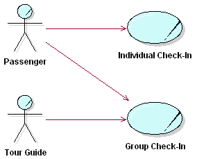
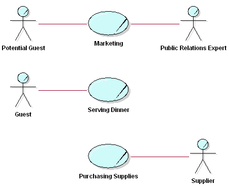
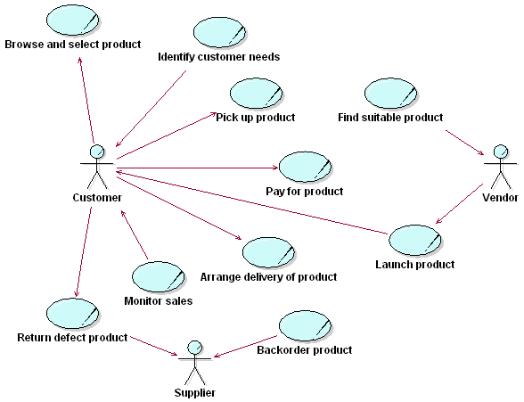
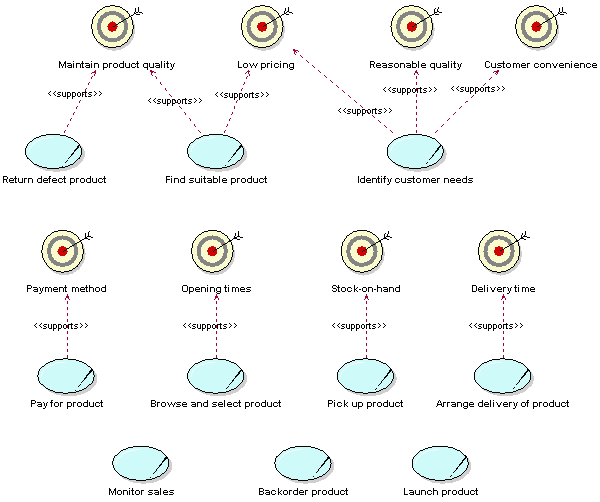
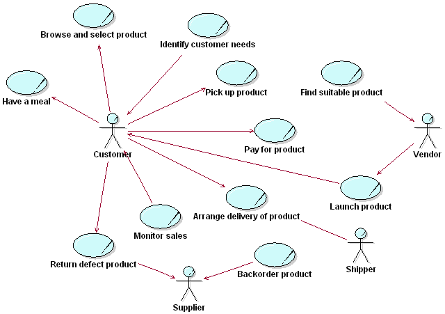
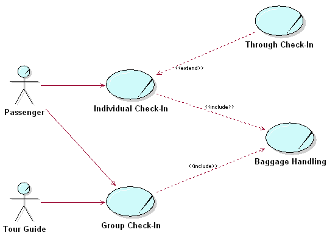
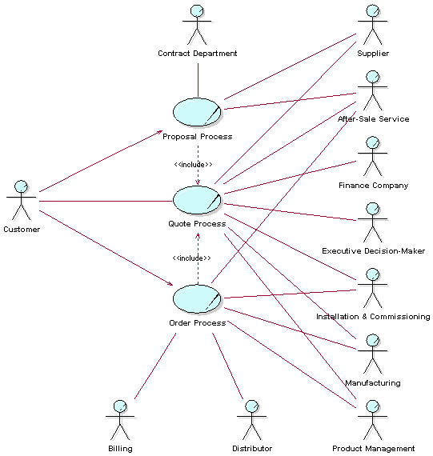

| Рекомендация: Business Use-Case Model |
 |
|
| Связанные элементы |
|---|
ExplanationA primary purpose of modeling business use cases and actors is to describe how the business is used by external agencies, importantly, its customers and partners. Tasks that directly concern the customer or partner, as well as supporting or managerial tasks that only indirectly concern the external party, can be presented. The model describes the business in terms of business use cases, which correspond to what are generally called "processes".  Actors and use cases at the check-in counter. Categories of Business Use CasesWhen looking at the tasks in a business, you will be able to identify at least three categories of work corresponding to three categories of business use cases:
We elaborate later on the meaning and representation of 'internal business use case'. Typically, a management type of business use case describes, in general, the relationships between the CEO and the people who work in the business use cases. It also describes how business use cases are developed and instantiated (started).  In this illustration, at a restaurant, the core business use cases are marketing and serving dinner, and the supporting business use case is purchasing supplies. Note that what you regard as a core business use case can sometimes be a supporting business use case in another business. For example, software development is a core business use case in a software development company, but it would be classified as a supporting business use case in a bank or an insurance company. Note though that many detailed business use cases that would be developed if you were modeling a software development business, will not appear at the topmost business use case level for a bank, say, that happens to develop its own software, not even as supporting business use cases. They may appear later as subordinate use cases (see Concept: Modeling Large Organizations). At the level of the bank, you would expect only to see supporting use cases that reflect the strategy and goals of the bank - one of which might well be 'operate software development business unit'. A Business Has Many Business Use CasesInstances of several different business use cases, as well as several instances of a single business use case, normally execute in parallel. There might be an almost unlimited number of paths a use-case instance can follow. These different paths represent the choices open to the use-case instance in the workflow description. Depending on specific events or facts, a use-case instance can proceed along one of several possible paths, directed, for example by:
In modeling business use cases, you can assume that use-case instances can be active concurrently without conflicting. At this stage of business development, you should focus on what the business should do. Solve potential resource conflicts later, when modeling the business use-case realizations, at which stage you try to understand how things should work in the business. Or you might solve these problems during the implementation of the new organization, for example, by increasing the number of employees who can perform the critical task. Are Business Use Cases Always Related to Business Actors?Every core business use case must have a communicates-relationship to or from a business actor. This rule enforces the goal that businesses must be built around the services that their users request. If your Business Use-Case Model has core business use cases that no one requests, this should warn you that something is wrong with the model. Business use cases can be triggered periodically, or they can run for a very long time; a surveillance function is an example of the latter. Even these business use cases have business actors that originally initiated them and expect different services from them. Otherwise they would not be part of the business. Other business use cases produce results for a business actor, although they are not explicitly initiated by the business actor. For example, the development of a widely distributed product is seldom initiated by an identifiable customer. Instead, the need for a new product is realized from market studies and the accumulated requests of many users. Internal Business Use CasesManagement and supporting business use cases (which we described above as internal) do not necessarily need to connect to a business actor, although they normally have some kind of external contact. A management business use case, for instance, might have the business owners or the board as its business actor. Now, a business use case without an actor seems an odd thing, given that a 'use case' is supposed to represent someone's or something's interaction with the business, and is supposed to deliver value, but you can regard this class of business use case as extensions of, perhaps notional, business use cases that do have business actors. We discuss the use of explicit extension in Guideline: Extend-Relationship in the Business Use-Case Model, but here the base (extended) business use case may be conceptual, and you may choose not to model it. The management and supporting business use cases are then extensions to this conceptual base, triggered by conditions (resulting in Work Product: Business Events) that arise in the conduct of business. Thinking in this way removes the need for artificial business actors to be introduced, but does oblige you to think about how the supporting and management business use cases add value. Abstract business use cases do not need a business actor, because they are never instantiated (started) on their own. Business Use Cases Must Support Business GoalsBusiness processes are the vehicle with which the business does things. Because business strategy is very difficult to translate directly into actions, something is else is needed. This something else is business goals, which ensure that business processes execute the business strategy by steering actions at all levels of the organization towards the ultimate business goal-the business idea. For this reason, each business use case should support at least one business goal. Translating the strategy into goals at different levels provides concrete, measurable objectives, which can be directly supported by business processes. Defining supporting relationships between goals and processes ensures that the business processes are aligned with the business strategy. This also helps find the right level of business use cases, which is often difficult to determine. Only one business use case (for example, Make Profit) that directly supports the strategic goals of the enterprise would be too complex and cumbersome to model as a sequence of tasks. On the other hand, a separate business use case for each individual operational task in the organization (for example, Forward Telephone Call or Book Conference Room) would result in too many business use cases to understand. Defining the business goals supported by a business use case indicates whether the business use case is "too high" or "too low." When a business use case explicitly supports one or more business goals, it becomes easier to quantify the value of the business use case. The contribution of the result of the business use case toward the goal can be measured. The performance of the business use case also can be monitored to provide an objective comparison of value versus cost. The existence of these relationships helps in prioritizing business use cases. Business use cases that support many business goals, or important and risky ones, are most likely to be considered architecturally significant. Many goals might also point to unnecessary complexity. If one business use case supports many different goals, then it is quite likely that conflicts will arise. In these cases, it may not be clear which goals should preside, resulting in inefficient actions. The category of the business use case (core, supporting, or management) does not directly determine the types of business goals it supports. The category provides only a guideline: the business strategy will ultimately determine which business goals a particular business use case supports. For example, a Market and Sell Product business use case might support the Competitive Prices business goal for a business with an aggressive growth strategy. The same business, years later, may wish to maximize its investment in these products and markets by targeting customer satisfaction and retention. The Market and Sell Product business use case may then have to support the (very different) Superior Quality business goal. See Guideline: Business Goal for more information on modeling business goals. For example, consider the large furniture store used as an example in Guideline: Business Goal. A Business Use Case Model for such a furniture chain may look as follows:  The customer can select products, pick them up from the warehouse attached to the showroom, and pay for them. Defect products can be returned. Identify Customer Needs is the business use case that is often referred to as Market Research. Once a suitable product has been found, it is launched, and the Vendor then becomes a Supplier. Product sales must be monitored, although it is arguable whether this a separate business use case (shown in the figure above) or part of Market Research. If we were to map the above business use cases onto the business goals described in Guideline: Business Goal, the following could result:  The Find Suitable Product business use case supports somewhat conflicting business goals. It must be made clear how to make tradeoffs between price and quality to ensure that both business goals are met. If product quality is measured by the number (or percentage) of returned defects, the cause of the defect must be established to trace it back to the supplier. For example, it could be that many products delivered to customers are returned due to the fact that they are damaged by the delivery team. However, if only the number of deliveries is measured, the quality of deliveries is not revealed. The Pay for Product business use case may support Payment Method and not Low Pricing, because pricing is determined during the (separate) Find Suitable Product Business use case. In some companies, a number of business use cases support no business goals. This may be a reason to merge Monitor Sales, for example, into Identify Customer Need, because Monitor Sales does not directly support any business goals. However, such merging should not be done too hastily, because a lack of support for business goals can be a sign that the business goals need to made more concrete. In the worst case, Monitor Sales provides input to Identify Customer Needs. The Deliver Product business use case supports the Delivery Time business goal. Customers should not have to wait too long for their purchased products to be delivered. Considering how this goal can be achieved might provide radical new ideas. For example, an underground tube could connect the warehouse to houses in the city and products could be blasted at 100 MPH through the tubes to arrive at home before the customer does! While this is unrealistic, this kind of brainstorming often generates many ideas for improving the business. Here is an example of how considering business goals may reveal the importance of seemingly trivial business use cases. Suppose it appears that many customers shop during mealtimes. Because one of the business goals is to improve the quality of facilities and another is to attract customers, we may decide to provide a restaurant where customers can have a snack before or after shopping. The business use case that supports this goal, Have Meal, is shown below. It may turn out that the restaurant becomes one of the main attractions of the business!  We also see the effect of adjusting the boundary of the business in the diagram above. Here, a new business actor has been introduced-namely, Shipper, a partner responsible for picking products up at the warehouse and delivering them to customers. It could be that this approach allows us to minimize the delivery time, which is one of the business goals. Structuring the Business Use-Case ModelThere are three main reasons for structuring the Business Use-Case Model:
To structure the business use cases, we have three kinds of relationships. You will use these relationships to factor out pieces of business use cases that can be reused in other business use cases, or that are specializations or options to the business use case. The business use case that represents the modification is called the addition use case. The business use case that is modified is called the base use case.
 The figure above shows actors and use cases and the check-in counter. Here we also show the inclusion use case Baggage Handling and the extension use case Through Check-In. You can use actor-generalization to show how actors are specializations of one another. See also Guideline: Actor-Generalization in the Business Use-Case Model. See also the discussion on structuring system use cases in Guideline: Use-Case Model. Delimiting the Modeling EffortEspecially when developing business models just to "prime the pump" for a software engineering project, you must carefully delimit the business-modeling effort. In this case, it is rarely worthwhile to span the whole organization, even if you model only a subset of the business processes. To stay focused and produce results that are of the expected value, you should consider a part of the whole company as your "business system." The part you choose should be the part that might directly use the system to be built. The parts of the organization that you decide to treat as external to the model can be represented as business actors. Example: The company has decided to undertake an effort to build a new application for sales and order management. To explore the needs of the organization and also to align the way business is done throughout the organization, the first step is to build a set of business models. The departments of the company that will not actively use the new order application are considered external to the model and are represented with business actors.  The figure above shows business actors and business use cases in a Business Use-Case Model of an order management organization. This organization sells complex solutions, custom-made to each customer. Here are some brief descriptions of the business use cases: Order Process-This process describes how the company takes appropriate actions to deliver a solution to a customer as defined by a set of customer requirements. The process starts when there is a business decision to proceed with an agreed-upon solution. This may often be in the form of the company receiving a purchase order from a customer. It ends when the customer is satisfied with the installment, and commission of the solution and payment is received. The objective is to satisfy customer requirements in a profitable way. Proposal Process-This is the process of generating a proposal(s) in response to customer requirements. The process is triggered by an inquiry from a customer and ends when the customer accepts (or rejects) any of the quote(s) in the proposal. The objective is to reach agreement on a quote that is acceptable both to the customer and to the company. Quote Process-The Quote Process is an abstract business use case that is included in both the Proposal Process and the Order Process. The process begins when there are customer requirements that need a quote produced for it. The objective of the Quote Process is to produce a solution meeting the customer requirements, and to provide it along with a price. The Survey DescriptionA survey description of the Business Use-Case Model must:
Example: This Business Use-Case Model covers the part of our company that manages orders from our customers, since only this part is of interest to the software engineering project that will use the results of business modeling as an input. For this reason, we do not include the parts of the company that handles billing, manufacturing, product management, and product development; they are considered external and therefore represented as business actors. In this organization, a sale involves not just the agreement on a solution, but also the actual building of the solution. To define a price for a solution, you need to engineer and build it to a certain level of detail. That is what is done in the Proposal Process. Once an agreement has been made with the customer, the solution is engineered in all details and then installed at the customer site. This is what is described in the Order Process. Both the Proposal Process and the Order Process include the abstract business use case Quote Process. Characteristics of a Good Business Use-Case Model
|
© Copyright IBM Corp. 1987, 2006. Все права защищены.. |